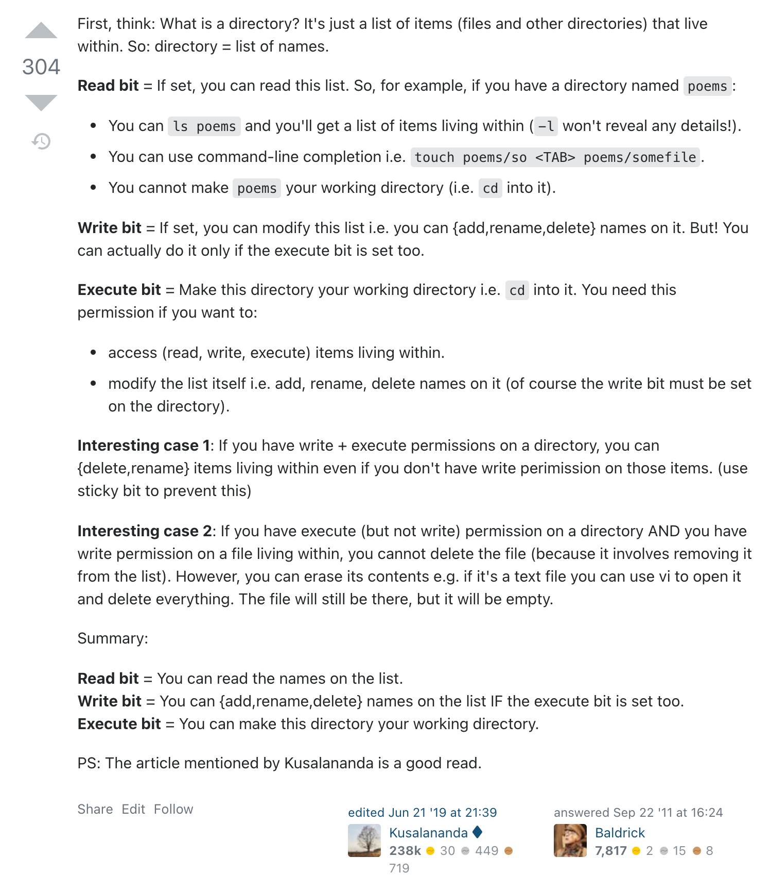
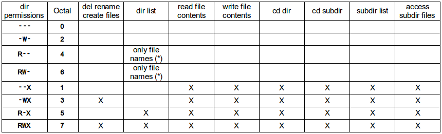

Table of Contents
useful
Get exit status of process that's piped to another
https://unix.stackexchange.com/a/14276Books and manuals
Classic Shell Scriptingg(advanced bash scripting guide pdf)
g(Bash Test Operators)
jq
https://stedolan.github.io/jq/ https://stedolan.github.io/jq/manual/https://ss64.com/bash/syntax.html
Hash table
https://stackoverflow.com/questions/1494178/how-to-define-hash-tables-in-bashhttps://levelup.gitconnected.com/5-less-known-bash-concepts-to-level-up-your-linux-skills-7bcf363804d1
inode
glob
rsync
rsync.sh g(TR-CS-96-05 The rsync algorithm Andrew Tridgell and Paul Mackerras June 1996)prepend date to each stream line
grep
cli keystrokes
function arguments - processing inside
stream buffer control
Stackoverflow question I've askedhttp://www.pixelbeat.org/programming/stdio_buffering/
https://mywiki.wooledge.org/BashFAQ/009
https://stackoverflow.com/questions/3465619/how-to-make-output-of-any-shell-command-unbuffered
https://stackoverflow.com/a/33741419
AFAIK, you can't do it without ugly hacks. Writing to a pipe (or reading from it) automatically turns on full buffering and there is nothing you can do about it :-(. "Line buffering" (which is what you want) is only used when reading/writing a terminal. The ugly hacks exactly do this: They connect a program to a pseudo-terminal, so that the other tools in the pipe read/write from that terminal in line buffering mode. The whole problem is described here:
# from: https://stackoverflow.com/a/3465784
xargs
find
https://ss64.com/osx/find.htmldebug
remove strip color from stream output
stream - delay stream
regex
top
basics
useful links
RAM disk
useful commands
kill killall
change user home directory
verifying default shell
more about: https://support.apple.com/en-gb/HT208050export .env
trap
zsh colors
array
https://www.geeksforgeeks.org/array-basics-shell-scripting-set-1/bash colors
See also: link also link

|
ping through dns
Processing arguments
Simple iteration - withouth shifthttps://medium.com/@Drew_Stokes/bash-argument-parsing-54f3b81a6a8f
basic auth generator
| user: | |
| password: |
HEREDOC:
linux permissions files
http://linuxcommand.org/lc3_lts0090.php
linux permissions directories
https://youtu.be/Z56Jmr9Z34Q?t=1336  source https://unix.stackexchange.com/a/21263